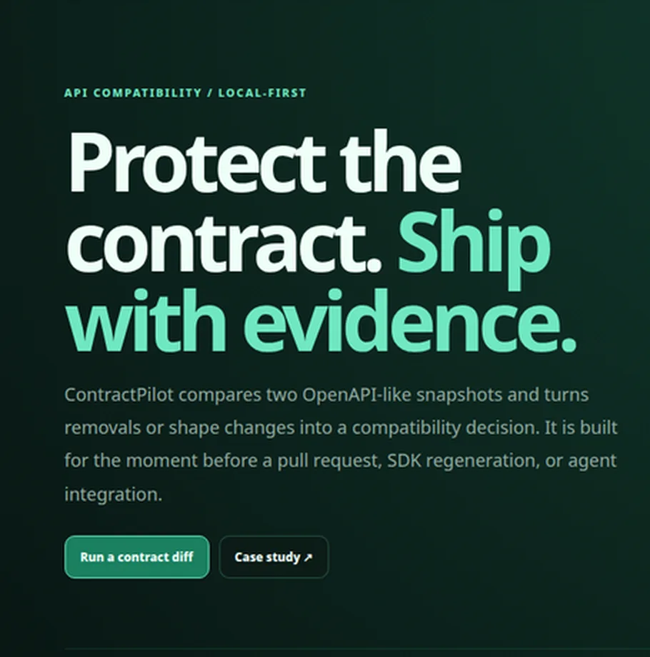
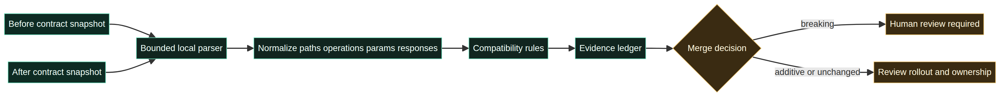

Durable job
Review a contract delta and decide whether to block, deprecate, migrate, or roll out.
ContractPilot is a local-first API contract diff for the moment before a pull request, SDK regeneration, or agent integration. It turns a snapshot change into a review object instead of a surprise in a downstream client.

AI can draft an endpoint, but a team still owns compatibility with existing callers. Removed parameters, operations, or response shapes can break mobile clients, integrations, and tool-using agents. ContractPilot is designed for frontend, backend, platform, and API reviewers who need a fast preflight before merge.
Review a contract delta and decide whether to block, deprecate, migrate, or roll out.
Evidence comes before a score: path, operation, removed field, and recommended action remain visible.
| Decision | Choice | Reason |
|---|---|---|
| Data boundary | Browser-local snapshots | Safe public demo with no API or contract upload. |
| Policy | Explicit compatibility rules | Reviewers can understand and test each rule. |
| Output | Evidence-linked findings | Works as a future CI annotation or human review object. |
The MVP normalizes two snapshots, compares paths, operations, parameters, and responses, then creates a merge decision. The editable Mermaid source and rendered diagram are both published.

The local breaking fixture produced three findings: two breaking changes on `GET /users` and one additive `/reports` path. The report showed `Review required` and kept the decision local. These are fixture observations, not customer outcomes.
Boundary: The current version is not a complete OpenAPI validator, gateway, SDK generator, or production CI integration.
Add an OpenAPI 3 parser, YAML support, schema compatibility, deprecation windows, CI/SARIF output, and regression fixtures for real client contracts. The policy layer should remain explicit and independently testable.